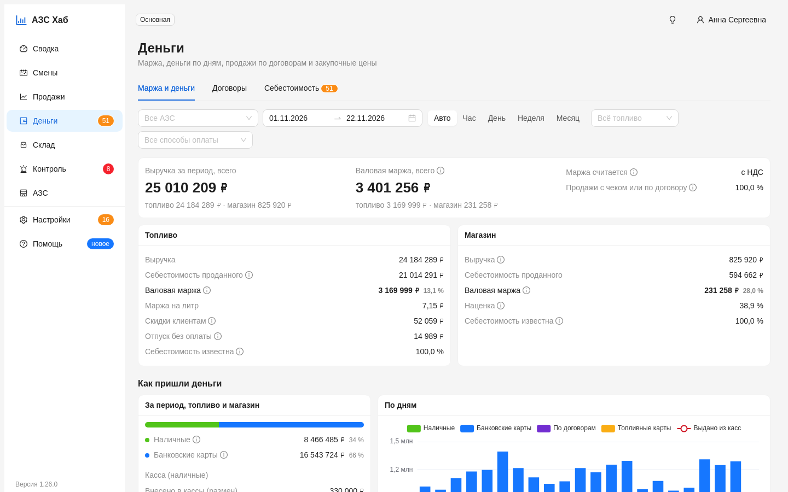

Сколько вы заработали на самом деле
Выручка и валовая маржа по каждой АЗС, виду топлива и товару магазина. Себестоимость топлива считается по средней закупочной цене в резервуаре, НДС учтён.
- маржа на литр и её изменение к прошлому периоду
- наличные, карты, договоры и топливные карты отдельно
- сколько внесено в кассы и сколько выдано
